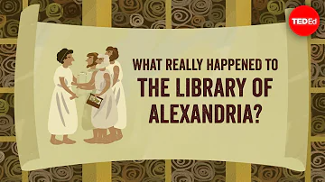

By now, having reviewed the first five chapters, the Mythical Jesus (MJ) theory should
clearly stand out as the most compelling explanation for the birth of Christianity.
The primary reason for this, you would tell me, is that we have stripped away the main arguments
for the existence of a HJ—specifically, a few claims of an existence independent of the Gospels.
So, it is time now to review them. We will look in this chapter at four intentional interpolations:
- 94 CE Josephus Antiquities 18.3.3
“Now about this time there lived Jesus a wise man, if one ought to call him a man, for he was a doer of wonderful works,... He was the Messiah... For he appeared to them alive again on the third day, as the holy prophets had predicted these and many other wonderful things about him. And the tribe of the Christians, so called after him, continues to the present day.”
- 50 CE Paul 1 Thessalonians 2:15
"by the Jews, who killed the Lord Jesus"
- 110 CE Paul's school 1 Timothy 6:13
"and of Christ Jesus, who while testifying before Pontius Pilate made the good confession,"
- 115 CE Tacitus Annals, Book XV, sec. 44
"The founder of that name was Christus, who, in the reign of Tiberius, was punished, as a criminal by the procurator, Pontius Pilate."Athough the interpolation is not required as Tacitus would just repeat what some Christians were saying.
Plus one accidental interpolation:
- 94 CE Josephus Antiquities 20.9.1
"the brother of Jesus, who was called Christ"
Then we will dig into the best argument for the existence of Jesus according to scholarship:
- 48 CE Paul Galatians 1:19
"James, the [or a] Lord’s brother."
Before we evaluate the two possible interpretations 'Sibling' and
'Brethen', we will look at the Context of the chapter,
and the other references of 'Brother' and 'James' in the NT.
Finally, we will review three other possible references of an HJ usually claimed by the HJ proponents.
- 48 CE Paul Galatians 4:4
"Born of a Woman, born under the Law"
- 55 CE Paul Romans 1:3
"concerning his Son Jesus Christ our Lord, who was made of the seed of David according to the flesh"
- That Jews came up with the idea of a Crucified Messiah.
But previous to all of that, like for the chapters on the Epistles and Gospels,
we need to bring back the historical context.
A Manipulated Context, a Dark Side of Christianity
| Targeted Destruction |
Scriptures Corruption |
A Flood of Forgeries |
A Unique Context |
A Targeted Destruction
Though Christian monastics preserved key classical texts, the institutional
shift during late antiquity resulted in the loss of over 90% of ancient Greek and Roman literature.
As a result, many ancient critiques of Christianity are known today
only through the rebuttals found in the works of the Church Fathers.
All the books below written during the beginning of Christianity no longer exist.
It is not a surprise for those that were anti-Christian.
For the others, we don't know if it is just a coincidence or if
they contained something that would have not fit Christian's orthodoxy.
30
On Superstition
Seneca
90
Chronicle of the Kings
Tiberias [1]
90
History of the Jewish War
Tiberias
110
Book 5 of Annales
Years 29 A.D. to 31 A.D.
Years 29 A.D. to 31 A.D.
Tacitus[2]
135
Antitheses
Marcion
178
The True Word
Celsus
200
The Augustan Succession
Years 6 BCE to 2 BCE
Years 6 BCE to 2 BCE
Cassius Dio
280
Against the Christians
Porphyry of Tyre
300
Two Books
Hierocles
350
Against the Galilaeans
Julian
(1) No Jesus there as Photios (archbishop of Constantinople) laments in the ninth century
that Justus failed to make any mention of him.
(2) Jesus must not be mentioned there since nothing is said when digressing on the fire later.
Destruction of the pagan temples by Theophilus
 |
The Royal Library of Alexandria |
|
| Youtube Video | 280? BCE-391 CE |
Youtube Video |
At its peak, the Library of Alexandria was the world's largest, holding an estimated 400,000 to 700,000 parchment scrolls.
It has not been destroyed in a single event but rather through a centuries-long, gradual decline involving multiple fires, budget cuts, and political neglect.
Among the key incidents was the one below:
"In the late 4th century, persecution of pagans by Christians had reached new levels of intensity.
Temples and statues were destroyed throughout the Roman Empire, pagan rituals forbidden under punishment of death, and libraries closed.
In 391, Emperor Theodosius ordered the destruction of all pagan temples,
and Patriarch Theophilus of Alexandria complied with this request."
Socrates Scholasticus provides the account of the
demolition of the Idolatrous Temples at Alexandria, and the Consequent Conflict between the Pagans and Christians
the
Pagans and Christians
"At the solicitation of Theophilus bishop of Alexandria the emperor issued an order at this time for the demolition
of the heathen temples in that city; commanding also that it should be put in execution under the direction of Theophilus.
Seizing this opportunity, Theophilus exerted himself to the utmost to expose the pagan mysteries to contempt.
And to begin with, he caused the Mithreum to be cleaned out, and exhibited to public view the tokens of its bloody mysteries.
Then he destroyed the Serapeum, and the bloody rites of the Mithreum he publicly caricatured;
the Serapeum also he showed full of extravagant superstitions, and he had the phalli of Priapus carried through the midst of the forum.
[...]Thus this disturbance having been terminated, the governor of Alexandria, and the commander-in-chief of the troops in Egypt,
assisted Theophilus in demolishing the heathen temples. These were therefore razed to the ground,
and the images of their gods molten into pots and other convenient utensils for the use of the Alexandrian church;
for the emperor had instructed Theophilus to distribute them for the relief of the poor.
All the images were accordingly broken to pieces, except one statue of the god before mentioned,
which Theophilus preserved and set up in a public place;
'Lest,' said he, 'at a future time the heathens should deny that they had ever worshiped such gods.'"

See Peter Kirby Library of Alexandria on Wikipedia
If christians had been tolerant with other different doctrines and points of views,
we would still certainly have some hundreds of libraries in the Ancient World that would have preserved Pagan literature.
But this is not the case.
Here, the Serapeum of the Great Library was destroyed and the neoplatonist philosopher Hypatia
was publicly murdered by a Christian mob. Elsewhere, things went bad too,
and it continued during the most part of the Middle-Age where
Christianity was deciding what to keep or not.
[We also owe them for what we have today, so their contributions were biased but not totally negative.]
[We also owe them for what we have today, so their contributions were biased but not totally negative.]
Book Burning
"In addition, if any writing composed by Arius should be found,
it should be handed over to the flames, so that not only will the wickedness of his teaching be obliterated,
but nothing will be left even to remind anyone of him. And I hereby make a public order,
that if someone should be discovered to have hidden a writing composed by Arius,
and not to have immediately brought it forward and destroyed it by fire, his penalty shall be death.
As soon as he is discovered in this offense, he shall be submitted for capital punishment..."
Roman emperor Constantine the Great after the First Council of Nicea (325 CE)
Cyril of Alexandria (c. 376–444), Archbishop of Alexandria (and Catholic Saint) brought fire to almost all the writings of Nestorius (386–450) shortly after 435.
Recared, first Catholic king of Spain,
ordered in 587 that all Arian books should be collected and burned.
During the Spanish colonization of the Americas, numerous books written by indigenous peoples were burned by
Spanish conquistadors and priests during the conquest of Yucatán.
"We found a large number of books in these characters and,... we burned them all,
which they (the Maya) regretted to an amazing degree, and which caused them much affliction"
Bishop Diego de Landa in 1562
In the end, we only have what the winning side left us.
"The winning side decided which books were going to count as scripture and
which books were going to be excluded, and the books that were excluded,
then, of course, are deemed heretical - teaching false beliefs - and aren't
included in the canon of scripture. And only the books, then, the 27 books
that finally made it into the New Testament are considered canonical."
B. Ehrman Misquoting Jesus
Naturally, all 'heretical' texts were never copied or destroyed.
Scriptures Corruption
It is impossible to know what the original manuscript of the NT said because these first-generation examples no longer exist,
and they have not been transmitted properly afterwards.
A Well Known Issue for the Church Fathers
"Some believers, as though from a drinking bout, go so far as to oppose themselves
and alter the original text of the gospel three or four or several times over
and they change its character to enable them to deny difficulties in face of criticism."
Origen quoting Celsus in Against Celsus
"The differences among the manuscripts have become great, either through the negligence of some copyists
or through the perverse audacity of others; they either neglect to check over what they have transcribed,
or in the process of checking, they make additions or deletions as they please."
Origen Commentary on Matthew
"dismembered the epistles of Paul, removing all that is said by the apostle
respecting that God who made the world, to the effect that He is the Father of our Lord Jesus Christ,
and also those passages from the prophetical writings which the apostle quotes,
in order to teach us that they announced beforehand the coming of the Lord."
Irenaeus (orthodox Bishop of Lyon) about Marcion in Against Heresies
"When my fellow-Christians invited me to write letters to them I did so.
These the devil's apostles have filled with tares, taking away some things and adding others.
For them the woe is reserved. Small wonder then if some have dared to tamper even with the word of the Lord himself,
when they have conspired to mutilate my own humble efforts."
Eusebius quoting Dionysius
who was an orthodox bishop of Corinth, in History of the Church
"So it was that they [apostates] laid hands unblushingly on the Holy Scriptures, claiming to have corrected them..."
Eusebius History of the Church
"...so what can we say now about the total number of variants known today in the NT?
Scholars differ significantly in their estimates: from 200,000 to 400,000.
There are more variations among our manuscripts than there are words in the New Testament!"
B. Ehrman Misquoting Jesus
But who is right? Since orthodoxy, itself, was doing it:
"Charges of this kind against "heretics"-that they altered the texts of scripture to make them say
what they wanted them to mean-are very common among early Christian writers.
What is noteworthy, however, is that recent studies have shown that the evidence of our surviving manuscripts
points the finger in the opposite direction.
Scribes who were associated with the orthodox tradition not infrequently changed their texts."
Scribes who were associated with the orthodox tradition not infrequently changed their texts."
B. Ehrman Misquoting Jesus
Accidental Scribal Interpolations
There is also the matter of accidental scribal interpolations;
where margin notes become mistaken for missing text and become inserted into the document.
For example, in Epiphanius' 4th century treatise The Weights and Measures,
an accidental scribal interpolation occurs on practically every other page of the text...
Bruce Metzger gives still more examples of all these types of alterations in his The Text of the New Testament; Its Transmission, Corruption and Restoration (1992).
Bruce Metzger gives still more examples of all these types of alterations in his The Text of the New Testament; Its Transmission, Corruption and Restoration (1992).
Fitzgerald, David Jesus: Mything in Action, Vol. I p. 163-164
This is important to know when looking at Josephus Antiquities 20.9.1.
"Most differences among early manuscripts are insignificant,
merely misspellings or deleted lines, but many impact core Christian beliefs.
In fact Ehrman explains that some scribes altered the text
based on conflicts of faith raging in the early days of Christianity.
These alterations were motivated by disagreements over many
central Christian beliefs, including the divinity of Jesus, doctrine of the trinity,
fleshly existence of Jesus and the virgin birth."
A Flood of Forgeries
"There is nothing so easy as by sheer volubility to deceive a common crowd or an uneducated congregation."
St. Jerome Epistle
St. Jerome Epistle
"It is usual for the sacred historian to conform himself to the generally accepted opinion
of the masses in his time."
St Jerome P.L., XXVI, 98; XXIV, 855
St Jerome P.L., XXVI, 98; XXIV, 855
“Arguably the most distinctive feature of the early Christian literature
is the degree to which it was forged.”
Bart Ehrman Forgery and Counterforgery (2013)
"The forged books outnumber the genuine ones over 3 to 1, and even those few authentic books
contain signs of later tampering and editing...
We don’t have to speculate that Christians tampered with scripture,
or made errors in its transmission, or outright forged scripture;
we know very well that they did, from the abundant textual
evidence of every single surviving early New Testament document."
Fitzgerald, David Jesus: Mything in Action, Vol. I
Letters, Gospels & Acts before 200 CE
Letters
between
Paul
and
Seneca
between
Paul
and
Seneca
Acts
of the
Apostles
of the
Apostles
The Book
of
Thomas
the
Contender
of
Thomas
the
Contender
Acts
of
Pilate
of
Pilate
Letter
from
Herod
Antipas
from
Herod
Antipas
Letter
to Agbar,
king of
Edessa
to Agbar,
king of
Edessa
Letter
of
Caiaphas
of
Caiaphas
Testimony
of
Thallus
and
Phlegon
of
Thallus
and
Phlegon
The
Testimonium
Flavianum
Testimonium
Flavianum
The
Sophia
of Jesus
Christ
Sophia
of Jesus
Christ
The
Testaments
of the
Twelve
Patriarchs
Testaments
of the
Twelve
Patriarchs
Christian
Sibyllines
Sibyllines
Apocalypse
of
Peter
of
Peter
The
Secret
Book
of
James
Secret
Book
of
James
Gospel
of the
Ebionites
of the
Ebionites
Gospel
of
Mary
of
Mary
Dialogue
of the
Savior
of the
Savior
Gospel
of the
Savior
of the
Savior
2nd
Apocalypse
of
James
Apocalypse
of
James
Gospel
of
Judas
of
Judas
Infancy
Gospel
of
James
Gospel
of
James
Infancy
Gospel
of
Thomas
Gospel
of
Thomas
Acts
of
Peter
of
Peter
Acts
of
John
of
John
Acts
of
Paul
of
Paul
Acts
of
Andrew
of
Andrew
Acts
of
Peter
and the
Twelve
of
Peter
and the
Twelve
Letter
of
Peter
to
Philip
of
Peter
to
Philip
Many more will come in the 3rd and 4th Century,
like the Letter of King Abgar to Jesus and Jesus' answer, see Early Christian Writings
Many Images of Jesus also circulated:
- Image of Edessa
- Shroud of Turin
- The first solid historical evidence of the shroud dates to 1390, when Bishop Pierre d'Arcis wrote to the Pope stating it was a forgery and its creator had confessed to creating it.
- In 1978, the microscopist and forensic expert Walter McCrone found that the image on the shroud had been painted with a dilute solution of red ochre pigment in a gelatin medium, while the apparent bloodstains were painted with vermilion pigment.
- In 1988, radiocarbon dating by three independent laboratories established that the shroud dates back to the Middle Ages, between 1260 and 1390.
- In 2009, Scientist re-creates Turin Shroud to show it's fake.
- Holy Face of Genoa
- Holy Face of San Silvestro
- Veil of Veronica
Mimicking the Style & Vocabulary
"In fact ‘mixed texts’ (a verbal and stylistic hybrid of the forger
and the target text) are the norm for forgeries, not the exception.
This is discussed throughout the work of Don Foster, Author Unknown,
Joe Nickell, Detecting Forgery (pp. 104–07), and Kenneth Rendell,
Forging History: The Detection of Fake Letters and Documents.
They all point out the difficulty of just ‘telling’ that someone wrote or forged a text by its vocabulary or style,
because forgers seek to emulate it. What these forensic experts then document is not that forgers fail entirely at it,
but that they will inevitably, statistically, fail at some of it—thus resulting in a hybrid text.
Hybrid texts are therefore evidence of forgery, not “editing.” Yes, editing is a possible explanation.
But you need particular evidence to establish that."
Ehrman notes it in discussing his first example, 2 Thessalonians, remarking that
“it is easy to take over the words of another writer” (p. 158).
Indeed it is. As is proved conclusively when he closes with the example of 3 Corinthians,
which no one doubts is a forgery, yet its stylistic and verbal similarities
with the authentic Corinthian correspondence “abound,” indeed
“a large number” of “Pauline words and phrases are scattered throughout” it (pp. 428–29).
Eusebius On Using Falsehood
Eusebius of Caesarea (263-340 CE) became the bishop of Caesarea Palaestina in 314.
He is often referred to as the Father of Church History because of his work in recording
the history of the early Christian church, especially Chronicle and Ecclesiastical History.
He was prominent in the transactions of the Council of Nicaea in 325
as he was a famous author who enjoyed the special favor of the emperor Constantine.
What Christians believe at least about Jesus can be summarized in this creed
that they usually repeat at church (I remember I did).
It is the profession of the Christian Faith common to the Catholic Church,
all the Eastern Churches separated from Rome and most of the Protestant denominations.
The Father
I believe in one God, the Father Almighty,
maker of heaven and earth, and of all things visible and invisible.
His Son
And in one Lord Jesus Christ, the only begotten Son of God,
and born of the Father before all ages.
God of God, light of light, true God of true God.
Begotten not made, consubstantial to the Father, by whom all things were made.
Who for us men and for our salvation came down from heaven.
And was incarnate of the Holy Ghost and of the Virgin Mary and was made man;
was crucified also for us under Pontius Pilate, suffered and was buried;
and the third day rose again according to the Scriptures.
And ascended into heaven, sits at the right hand of the Father,
and shall come again with glory to judge the living and the dead,
of whose Kingdom there shall be no end.
The Holy Ghost
And I believe in the Holy Ghost, the Lord and Giver of life,
who proceeds from the Father (and the Son),
who together with the Father and the Son is to be adored and glorified,
who spoke by the Prophets.
who proceeds from the Father (and the Son),
who together with the Father and the Son is to be adored and glorified,
who spoke by the Prophets.
The Church
And one holy, catholic, and apostolic Church.
The Sacrament
I confess one baptism for the remission of sins.
The After Life
And I look for the resurrection of the dead and the life of the world to come.
Amen.
"Religion is an area where we tolerate dogma completely uncritically...
Most religion have merely canonized a few products of ancient ignorance and derangement and passed them down to us as through they were primordial truths. This leaves billions of us believing what no sane person could believe on his own."
Sam Harris The End of Faith
Most religion have merely canonized a few products of ancient ignorance and derangement and passed them down to us as through they were primordial truths. This leaves billions of us believing what no sane person could believe on his own."
Eusebius is infamous for saying that it was necessary to lie for the cause of Christianity.
In his Praeparatio Evangelica 12.31, listing the ideas Plato supposedly got from Moses,
he included this comment.
"That it is necessary sometimes to use falsehood as a medicine for those who need such an approach."
Then Eusebius is quoting Plato's Laws 663e:
[Athenian character]:
[Athenian character]:
"And even the lawmaker who is of little use, if even this is not as he considered it,
and as just now the application of logic held it, if he dared lie to young men for a good reason, then can't he lie?
For falsehood [pseudos] is something even more useful than the above,
and sometimes even more able to bring it about that everyone willingly keeps to all justice."
[Clinias Character]
For falsehood [pseudos] is something even more useful than the above,
and sometimes even more able to bring it about that everyone willingly keeps to all justice."
"Truth is beautiful, Stranger, and steadfast. But to persuade people of it is not easy."
Followed by Eusebius' further comments:
"You would find many things of this sort being used even in the Hebrew scriptures,
such as concerning God being jealous or falling asleep or getting angry or being subject to some other human
passions, for the benefit of those who need such an approach."
To understand what Eusebius means, it is important to know how the Platonic dialogue he quotes continues.
See The Formation of the New Testament Canon
"So in a book where Eusebius is proving that the pagans got all their good ideas from the Jews,
he lists as one of those good ideas Plato's argument that lying, indeed telling completely false tales,
for the benefit of the state is good and even necessary. Eusebius then notes quite casually how the Hebrews did this,
telling lies about their God, and he even compares such lies with medicine, a healthy and even necessary thing.
Someone who can accept this as a “good idea” worth both taking credit for and following is not the sort of person to be trusted.
Unfortunately, he is often our only source for much of the early history of Christian texts."
R. Carrier on the Infidels
"Considering early Christianity’s known history of forgery, of pseudonymous letters that misrepresent themselves,
of interpolations and the doctoring of documents, including canonical ones,
the wholesale invention of fraudulent Acts of this and that apostle,
letters between Paul and Seneca,
missives to the emperor on the part of Pilate recounting the career and trial of Jesus,
and so on in vast measure,
there is certainly no impediment to allowing such indulgences to Eusebius in his construction of the history of his religion
from scattered and incomplete sources. Second only to the canonical Acts of the Apostles,
Eusebius’ History is crucial for understanding the early history of the Church.
As the former is quite clearly an idealization and in great measure fictional,
there is no compelling reason to regard the latter as any more reliable."
E. Doherty Was Eusebius “Telling Lies”?
Eusebius was not afraid to record a tradition (Church History I.12),
which he himself firmly believes, concerning a correspondence that took place between Our Lord and the local potentate at Edessa.
The Legend of Abgar
All these issues are important to know when dealing with The Testimonium Flavianum,
as he is the first one to quote it. See Tab "Josephus"
A Lying Church
Tertullian
What is said about Eusebius can also be said to many other church fathers like
Justin Martyr or Tertullian.
"It is the sort of thing we may expect from a Tertullian, who, in his
Apology for Christianity (c. 21), tells one who doubts the
truth of the gospel story that he will find a special report of Pilate to Tiberius
in the Roman archives. In the mouth of a modern historian such a statement is frankly ridiculous."
The Myth of Persecution

How Early Christians Invented a Story of Martyrdom
"The blood of martyrs is the seed of the Church" Tertullian
Another example of lie, largely politically and theologically motivated, was the
invention of the persecuted Church by Eusebius and other Church fathers.
As we will see, the traditional history of Christian martyrdom is mistaken.
Christians were not constantly persecuted, hounded, or targeted by the Romans.
Very few Christians died, and when they did, they were often executed for what we in the modern world would call political reasons.
Even today, many Christians claim that their church is persecuted,
including in the U.S. where religion has unique advantages, see A Christian World in chapter 1.
The history of Christianity is full of forgeries.
Books, relics, paintings, "James Ossuary", weeping statues... are still made up to the present time.
More examples at Would they lie?
by K. Humphreys.
A Unique Context
"...Christian literature, and history, holds almost no analogy with any other literature or history we could care to name.
From Homer to Tacitus, there is by comparison virtually no such background
or context of ideological conflict affecting the texts--affecting not only the doctoring or editing of their content,
but their very selection and preservation. Christianity's own history,
and above all the nature of Jesus, was the very target of contention here.
I cannot think of any comparable problem in ancient history
that is as seriously challenged by such biasing of the source material.
Yet the "victorious" sect happened to be historicist. Since that was an accident of their tactics and good fortune,
we cannot be entirely confident that the orthodoxy, much less the surviving source material,
reflects the truth about Jesus. This is all the more troubling since we know the orthodox sect was credulously
eager to latch onto any piece of nonsense that supported their historicist position.
Prominent examples include the obvious fantasies inserted into the Gospel narrative by Matthew,
the wild legends believed and repeated by the early 2nd century Christian Papias,
and Eusebius' belief and reliance upon a forged letter of Jesus himself.
More troubling, though more debatable, examples include Luke's "importation"
of historical details into the basic combination of Mark and Q so as to make a hagiography
look like a history (see my "Luke and Josephus"), and John's probable invention
of the Doubting Thomas tale.
All this does not entail that the historicist sect was wrong and that Jesus didn't exist.
But it does throw a wrench into any argument that draws on analogies with other historical questions
which were not subject from the start to this unusually intense and persistent ideological conflict and behavior.
Historians are in a worse position regarding early Christian history than any comparable
(and comparably preserved) institutional history (such as the origins of the major schools of philosophy),
and the most suspect elements are, by an unfortunate coincidence, the very ones a historicist needs to settle his case."
R. Carrier Did Jesus Exist? Earl Doherty and the Argument to Ahistoricity (2002)
"Who controls the present controls the past."
Four Interpolations?
| Josephus | 1 Thessal.Thessalonians 2:15 |
1 Timothy 6:13 |
Tacitus (optional) |
Josephus
"The Jewish historian Flavius Josephus exhibits two contentious passages referring to a human Jesus.
One is a Christian composition as it now stands, and the other is problematic in certain respects.
In the absence of any other supporting evidence from the first century that in fact
the Jesus of Nazareth portrayed in the Gospels clearly existed, Josephus becomes the slender thread by which such an assumption hangs.
And the sound and fury and desperate maneuverings which surround the dissection of those two little passages becomes a din of astonishing proportions."
Earl Doherty
Besides those observations, six things in all have changed since opinions were last declared on this subject:
- Reliance on the Arabic version of the Testimonium must be discarded.
- Attempts to invent a pared-down version of what Josephus wrote are untenable.
- The Testimonium derives from the New Testament.
- The Testimonium doesn’t match Josephan narrative practice or context.
- The Testimonium matches Eusebian more than Josephan style.
- Previous opinions on the James passage were unaware of new findings, and therefore require revision.
Six traditional arguments against the authenticity of any part of this still stand and carry weight.
- The TF doesn’t fit the context of JA 18.62 and 65 (e.g. it does not describe “a disaster befalling the Jews” nor explain the rising tensions between Jews and Romans leading to war).
- The TF is implausible from a Pharisaic Jew (e.g. calling Jesus the messiah; saying he fulfilled prophecy).
- The TF is improbably brief (just contrast it with the religious controversy immediately following in the JA, covered in eight times more length, yet on a far more trivial incident).
- The TF is improbably obscure (contrast how Josephus writes about other sects, teachings, and actions, and how he always explains obscure terms like “Christ” or “Christian”).
- The TF was unknown to Origen (despite his explicit search of Josephus for Jesus material in his answer to Celsus) and all other Christian authors before the 4th century.
- Rewriting the TF to ‘solve’ these problems is always baseless speculation, not empirical argument.
New arguments since 2008
- The content, concepts, and sequence of the TF matches the gospel summary in Luke 24 (Goldberg 1995).
- The style of the TF is more Eusebian than Josephan (Olson 2013; Feldman 2012).
- The narrative structure of the TF is not even remotely Josephan, but is a perfect match for Christian creedal statements (in respect to the treatment of time, story, emplotment, and apologetic: Hopper 2014).
- All manuscripts of the JA are descended from the one used and possibly even produced by Eusebius (Whealey 2008; Carrier 2012).
|
The Testimonium Flavianum (TF), Antiquities 18.3.3
|
||
| Authentic | Interpolation | |
| Theory | ||
| Theory |
The words of Josephus later modified and extended by a Christian scribe.
Josephus did write something about Jesus of Nazareth.
|
An interpolation by a Christian scribe during the time of Eusebius.
Josephus never wrote anything of the TF.
|
| Context | ||
| Context | ||
| Content | ||
| Content | ||
|
"the brother of Jesus, who was called Christ" Antiquities 20.9.1
|
||
| Authentic | Accidental Interpolation | |
| Theory | ||
| Theory |
The exact words of Josephus describing the death of James the blood brother
of Jesus of Nazareth, the man called Christ.
|
An accidental interpolation from a gloss note by a Christian scribe
probably in or between Origen and Eusebius.
|
| Context | ||
| Context | ||
| Content | ||
| Content | ||
- Josephus Unbound: Reopening the Josephus Question
- Josephus on the Rocks
- Book Jesus: neither God Nor Man p.533-586
Richard Carrier:
- Jesus in Josephus
- The Testimonium Flavianum
- The Josephus Testimonium: Let’s Just Admit It’s Fake Already
- The End of the Arabic Testimonium
- Reading Josephus on James: On Valliant Flunking Literary Theory
- “What Did Josephus Mean by That?” A Case Study in the Relationship between Evidence and Probability
- Mason on Josephus on James
- Origen, Eusebius, and the Accidental Interpolation in Josephus, Jewish Antiquities 20.200
- Book On the Historicity of Jesus p. 332-342
Ken A. Olson:
- Eusebius and the "Testimonium Flavianum"
- YouTube Is The Testimonium Flavianum A Complete Forgery By Church Father Eusebius?
Paul Hopper:
Gary J. Goldberg:
Robert G. Price:
Neil Godfrey:
A list of 22 Vridar posts on the topic: Jesus in Josephus: Testimonium Flavianum
- Earl Doherty’s Response to Bart Ehrman’s Case Against Mythicism: Jewish Sources
- Fresh Evidence: The Forged Jesus Passage in Josephus
- The Jesus reference in Josephus: its ad hoc doctoring and various manuscript lines
- The Testimonium Flavianum: more clues from Eusebius
- Jesus in Josephus — Eusebian clues — point 4
- Jesus in Josephus — pts 5-12
- Jesus in Josephus – “not extinct at this day”
- R.I.P. F.F.Bruce on the Testimonium Flavianum
1 Thessalonians 2:15
"You [referring to the Christians of Thessalonica] have fared like the congregations in Judea, God's people in Christ Jesus.
You have been treated by your countrymen as they are treated by the Jews, who killed the Lord Jesus and the prophets and drove us out,
the Jews who are heedless of God's will and enemies of their fellow-men, hindering us from speaking to the gentiles to lead them to salvation.
All this time they have been making up the full measure of their guilt, and now retribution has overtaken them for good and all."
1 Thessalonians 2:14-16
Arguments for the Interpolation
An Anachronism
Verse 16 is an apparent reference to the destruction of Jerusalem that happened several years after Paul's death.
It is even barely conceivable that it refers to the outcome of the second Jewish Revolt (132-5),
when Bar Kochba was crushed, Jews were expelled from Palestine, and a Roman city was built over the ruins of Jerusalem.
This finality of God's wrath must refer to an event on the scale of the first Jewish War (66-70),
when the Temple and much of Jerusalem were destroyed, not, as is sometimes claimed (e.g., by R. E. Brown),
to the expulsion of Jews from Rome (apparently for messianic agitation) by Claudius in the 40s.
This gleeful, apocalyptic statement is hardly to be applied to a local event
which the Thessalonians may or may not have been aware of several years later.
Besides, Paul's reference in verse 14 (which many take as the end of the genuine passage) is to a persecution by Jews in Judea,
and even the killing of Jesus was the responsibility of Jews in that location.
Offering a local event in Rome as a punishment for either crime seems somehow inappropriate.
There are also those who question whether any such persecution of Christians took place prior to 70
(see Douglas Hare, The Theme of Jewish Persecution of Christians in the Gospel According to St. Matthew, p.30ff.),
indicating that perhaps even verse 14 is part of the interpolation, by someone who had little knowledge of the conditions in Judea at the time of Paul's letter.
(Pearson, below, suggests this.)
Contradicting Paul's view on the Jews
It does not concur with what Paul elsewhere says about his fellow countrymen,
whom he expects will in the end be converted to Christ. Rather, this is characteristic language of 2nd century Christianity.
The vicious sentiments in these verses is recognized as an example of "gentile anti-Judaism"
and "foreign to Paul's theology that 'all Israel will be saved'."
(See Birger Pearson: "1 Thessalonians 2:13-16: A Deutero-Pauline Interpolation,"
Harvard Theological Review 64 [1971], p.79-94, a thorough consideration of the question.)
Contradicting Romans 11
I ask then: Did God reject his people? By no means! I am an Israelite myself, a descendant of Abraham, from the tribe of Benjamin.
God did not reject his people, whom he foreknew.
Romans 11
a passage in which he speaks of the guilt of the Jews for failing to heed the message about the Christ,
Paul refers to Elijah's words in 1 Kings, about the (largely unfounded) accusation that the Jews have habitually killed the prophets sent from God.
Here Paul breathes not a whisper about any responsibility on the part of the Jews for the ultimate atrocity of the killing of the Son of God himself.
This would be an inconceivable silence if the 2:15-16 passage in 1 Thessalonians were genuine and the basis of the accusation true.
The sole responsibility of the Jews
About Israel
Scholars voting for the interpolation
These are some of the scholars who have pronounced 1 Thessalonians 2:15-16 an interpolation:
- Birger A. Pearson: "1 Thessalonians 2:13-16: A Deutero-Pauline Interpolation," Harvard Theological Review 64 (1971) p.79-94
- Burton Mack: Who Wrote the New Testament? p.113
- Wayne Meeks: The First Urban Christians, p.9, n.117
- Helmut Koester: Introduction to the New Testament, vol. II, p.113
- Pheme Perkins: Harper's Bible Commentary, p.1230, 1231-2
- S. G. F. Brandon: The Fall of Jerusalem and the Christian Church, p.92-93
- Paula Fredriksen: From Jesus to Christ, p.122
B.Ehrman counter-arguments
No variant in any extant manuscripts
There are no different textual traditions of 1 Thessalonians without the disputed passage.
Since this is so, it is claimed, the insertion would have to have been made very early (soon after 70),
when there would hardly have been enough time for the evolution from the mythical to the historical Jesus phase.
But this is an unfounded assumption. Recently (see The New Testament and Its Modern Interpreters, Epp and MacRae, eds., 1989, p.207f.)
some scholars have abandoned the old idea that the first corpus of Pauline letters was assembled no later than the year 90.
They now see such a collection as coming around the time of Marcion in the 140s.
Even though a few individual letters, like Romans and the two Corinthians,
do seem to have been known by the turn of the century to people like Ignatius,
the first witness to the epistle 1 Thessalonians in the wider Christian record
(beyond the writer who used it to compose 2 Thessalonians, probably in that city) comes no earlier than that first corpus.
Thus the interpolation in 2:15-16 could have been made considerably later than 70. Even into the second century,
Christian anti-Semitism remained high and the catastrophic events of the first Jewish War were very much alive in the memories of both Jew and gentile in the eastern empire.
The inserted passage could have been made in the letter's own community, before it entered the corpus.
It is even barely conceivable that verse 16 refers to the outcome of the second Jewish Revolt (132-5),
when Bar Kochba was crushed, Jews were expelled from Palestine, and a Roman city was built over the ruins of Jerusalem.
Earl Doherty
1 Timothy 6:13
"Fight the good fight of the faith. Take hold of the eternal life to which you were called
when you made your good confession in the presence of many witnesses.
In the sight of God, who gives life to everything, and of Christ Jesus,
who while testifying before Pontius Pilate made the good confession,
I charge you to keep this command without spot or blame until the appearing of our Lord Jesus Christ,
which God will bring about in his own time"
1 Timothy 6:12-14
Earl Doherty Book Jesus: neither God Nor Man p.660-662

Tacitus
In all the Roman records there was to be found no evidence that Christ was put
to death by Pontius Pilate...excepted in the extract below.
On July, 19th, 64 CE, a fire started in Rome and burned for nine days,
finally destroying or damaging almost three-quarters of the city, including numerous public buildings.
According to Tacitus, rumors spread that the fire had been planned by Nero.
To stop them, Tacitus said he then blamed the disastor on the Christians...
"Nero, in order to stifle the rumor, ascribed to those people
who were abhorred for their crimes and commonly called Christians: These he
punished exquisitely. The founder of that name was Christus, who, in the reign of Tiberius,
was punished, as a criminal by the procurator, Pontius Pilate.
This pernicious superstition, thus checked for awhile, broke out again;
and spread not only over Judea, the source of this evil, but reached the city
also: whither flow from all quarters all things vile and shameful, and where they
find shelter and encouragement.
At first, only those were apprehended who confessed themselves of that sect;
afterwards, a vast multitude were detected by them, all of whom were
condemned, not so much for the crime of burning the city, as their hatred of mankind.
Their executions were so contrived as to expose them to derision and contempt.
Some were covered over with the skins of wild beasts, and torn to pieces by
dogs; some were crucified.
Others, having been daubed over with combustible materials,
were set up as lights in the night time, and thus burned to death.
Nero made use of his own gardens as a theatre on this occasion,
and also exhibited the diversions of the circus, sometimes standing in the crowd as a spectator,
in the habit of a charioteer; at other times driving a chariot himself, till at length those men,
though really criminal, and deserving exemplary punishment,
began to be commiserated as people who were destroyed,
not out of regard to the public welfare, but only to gratify the cruelty of one man."
Annals, Book XV, sec. 44
Now, let's look closer to the text...
1 - Nero's atrocities against Christians
- The blood-curdling story about the frightful orgies of Nero reads like some Christian romance of the dark ages, and not like Tacitus. The dramatic and fantastic description of the tortures suffered by the scapegoats resembles the executions portrayed in later legendary Acts of Christian Martyrs.See also Nero's Fire and the Christian Persecution?
- If there was a vast multitude of Christians in Rome at that date, there is little chance Christianity started 30 years before in Judea by eleven illiterate peasants and fishermen.
- There is no corroborating evidence that Nero persecuted the Christians so vigorously:
- In chapter 5 of his Apology, after claiming that the emperor Tiberius had been a Christian, Tertullian writes:"Consult your sources; you will find there that Nero was the first who assailed with the sword the Christian sect, making progress then especially at Rome."In chapter 21, after asserting that Pilate also had become a Christian, he said that:"His disciples also... after suffering greatly themselves from the persecutions of the Jews... at last by Nero's cruel sword sowed the seed of Christian blood at Rome.""There is no hint that this man's balloon-like imagination had ever been inflated by Tacitus' tale of Christians being burned as night-lights in Nero's garden."F.Zindler The Jesus the Jews Never Knew
- Origen has little to say about any persecutions.
- Although Eusebius knows the tradition of the martyrdoms of Peter and Paul under Nero and even conceives the persecution of Christians under Nero -- the first of the emperors who showed himself to be the enemy of the divine religion --as a kind of salvation-historical turning point in Christian history-- he nevertheless makes no reference to the "multitude" of believers who supposedly suffered martyrdom under Nero at the time of the burning of Rome.
- Irenaeus makes no reference at all to a persecution under Nero.
- Suetonius, while mercilessly condemning the reign of Nero, says that in his public entertainments he took particular care that no human lives should be sacrificed, "not even those of condemned criminals."
2 - Nero starting the fire
- Fires were an extremely common occurrence in ancient Rome (hence the Vigili).
- Nero was in Antium at the time the fire broke out.
- He had finished, in the same year, his sumptuous palace, Domus Transitoria, which was destroyed in the fire.
- He rushed back to help fight the fire.
- He had no reason to start such a fire.
- Tacitus and Suetonius were paid to write their histories by enemies of the Julio-Claudian family.
- Their accounts are clearly biased against Nero.
3 - Christians starting the fire
- It is highly remarkable that no other ancient source associates Christians with the burning of Rome until Sulpicius Severus in the late fourth century who seems moreover only repeating Tacitus.
- Other ancient historians also refer to Nero's persecution of Christians
(Suetonius, Dio
Cassius, Pliny the Elder),
but none of these associates the persecution of Christians with the burning of Rome.
- In his Life of Nero, Suetonius writes:
"Punishment was inflicted on the Christians, a class of men addicted to a novel and mischievous superstition."The implication of "mischievous" is not far to undercut the notion in Tacitus that this was a gang of arsonists.Suetonius fails to mention their punishment having anything to do with the fire.
- In 112 or so, Pliny wrote to Trajan about christians basically asking:"what do I do with these people?".Trajan responded in a fairly mild manner.
- In his Life of Nero, Suetonius writes:
- Both Trajan and Pliny were alive when the Tacitus comment claims that christians were held responsible for burning down 2/3 of the city of Rome. As Roman aristocrats it would seem that both Pliny and Trajan would be a little more worked up about this sect of crazed arsonists living in their midst.So, on the one hand we are asked to believe that these stories were rampant when Tacitus was writing the Annales at the same general time as Pliny was governor of Asia Minor, but on the other hand, Pliny and Trajan seem oblivious to the danger in their midst?Something does not compute.
4 - The Anti-Christian tone of the passage
- This silly argument simply says that a christian interpolator would not have the capacity to write something he would consider in the "tone" of Tacitus.Its severe criticisms of Christianity do not necessarily disprove its Christian origin. No ancient witness was more desirable than Tacitus, but his introduction at so late a period would make rejection certain unless Christian forgery could be made to appear improbable.
- The argument can be even returned against the authenticity because it gives Christians an history of martyrs, persecutions and hate by pagans without any visible reasons. This can be reused to enhance believers faith and pride.
- Since Christians had done nothing against any Greek or Roman up to the time of Tacitus, it seems bizarre that Tacitus should be so passionate in his hatred for them.However, it is evident from other passages in his work that he does passionately hate the Jews. He is very careful to explain the reason for his hatred of the Jews. Also, he consistently labels it a superstition.So we have to ask why Tacitus would carefully explain his reasons for hating the Jews and calling it a superstition, but not explain his reason for hating the Christians and calling their religion a superstition?Is there other passage in Tacitus where he expresses equivalent hatred for a group and does not explain why?If not, it would not be impossible for example that Tacitus originally wrote the passage about the Jews and it was later interpolated by Christians to be about Christians, so there is no missing motive. This becomes just another of a series of passages in Tacitus attacking Jews.5 - Miscellaneous
- The integration of the passage with the story:Tacitus has just written a beautifully vicious but subtle attack on Nero over the fire, yet the passage in question which naturally enough follows immediately on the fire, is a gross piece of sensationalism which changes the focus from Nero's presumed responsibility for the fire, to the horrendous treatment of the christians who earn the sympathy of the crowd, a sensationalism quite uncharacteristic of Tacitus.
- Chapters 11-16 of the Annals derive from a single manuscript dated to the eleventh century.
This copy, therefore must have been copied and recopied many times, by generations of Christian scribes. So there were certainly many opporunities to modify what Tacitus originally wrote. As this single copy was in the possession of a Christian the insertion of a forgery was easy.
- It is admitted by Christian writers that the works of Tacitus have not been preserved with any considerable degree of fidelity. In the writings ascribed to him are believed to be some of the writings of Quintilian.
- Tacitus said: "commonly called Christians", but 'Christian' was not a common term in the first century. And it does not appear that Christians were separated very much from Jews in the mid first century, so it is not clear how Nero's agents would have identified them to make them scapegoats.
- This story, in nearly the same words, omitting the reference to Christ,
is to be found in the writings of Sulpicius Severus 360-420 CE, a Christian of the fifth century.
"In the meantinme, the number of the Christians being now very large, it happened that Rome was destroyed by fire, while Nero was stationed at Antium. But the opinion of all cast the odium of causing the fire upon the emperor, and he was believed in this way to have sought for the glory of building a new city. And in fact Nero could not, by any means he tried, escape from the charge that the fire had been caused by his orders. He therefore turned the accusation against the Christians, and the most cruel tortures were accordingly inflicted upon the innocent. Nay, even new kinds of death were invented, so that, being covered in the skins of wild beasts, they perished by being devored by dogs, while many were crucified or slain by fire, and not a few were set apart for this purpose, that, when the day came to a close, they should be consumed to serve for light during the night. In this way, cruelty first began to be manifested against the Christians."Chronicles 2.29
6 - "The founder of that name was Christus, who, in the reign of Tiberius,
was punished, as a criminal by the procurator, Pontius Pilate"- It is not quoted by the Christian fathers:
- TertullianHe was familiar with the writings of Tacitus, and his arguments demanded the citation of this evidence had it existed.
- Clement of AlexandriaAt the beginning of the third century, he made a compilation of all the recognitions of Christ and Christianity that had been made by Pagan writers up to his time. The writings of Tacitus furnished no recognition of them.
- OrigenIn his controversy with Celsus, he would undoubtedly have used it had it existed.
- EusebiusIn the fourth century, the ecclesiastical historian Eusebius cites all the evidences of Christianity obtainable from Jewish and Pagan sources, but makes no mention of Tacitus.
- It is not quoted by any Christian writer prior to the fifteenth century
- The passage neither reflects Tacitus in tone nor in linguistic ability. Just consider:
"auctor nominis eius Christus Tiberio imperitante per procuratorem Pontius Pilatus supplicio adfectus erat."
- Vocabulary
- Tacitus clearly knows when Judea was administered by 'procurators', yet this passage calls Pontius Pilate a 'procurator' when he should have been called a 'prefect', and, given Tacitus's knowledge in the area, including when procurators received magistrate's powers, this would be an incredible error for Tacitus.
- Tacitus does not use the name 'Jesus' but 'Christus'
-
Tacitus assumes his readers know Pontius Pilate.John Meier tellingly observes (without perceiving its significance):"There is a great historical irony in this text of Tacitus; it is the only time in ancient pagan literature that Pontius Pilate is mentioned by name -as a way of specifying who Christ is. Pilate's fate in the Christian creeds is already foreshadowed in a pagan historian,"- which could easily indicate Christian apologetic intervention.
- Tacitus himself when dealing with this same period in his earlier work [Histories 5.9.2] gives no hint of this outrage. To the contrary, he says that in Palestine at this time "all was quiet".
- It interrupts the narrative; it disconnects two closely related statements.Eliminate this sentence, and there is no break in the narrative.
"It is very hard to contemplate the veracity of such passages when they have been preserved by means of christian scribes who have been known to interpolate and massage texts.But that it existed in the works of the greatest and best known of Roman historians, and was ignored or overlooked by Christian apologists for 1,360 years, looks very suspicious.And finally, even if genuine, it is too late and probably from Christians in Rome. So the Myth theory can explain it very well."
Knowing the number of forgeries during all these years,
there should be no impediment to drop these three or four ones in this bucket,
as many NT scholars do.
James Brother of the Lord
| Context Chapter |
Context Brother |
Context James |
A Sibing |
A Brethren |
Context Chapter
"James, the [or a] Lord’s brother." Galatians 1:19
is the main argument scholars of the NT have found against the MJ.
According to them, "if we can read", Paul says he is meeting a biological brother of Jesus,
so he knows that his heavenly Christ is the deification of a recent man.
This man even had a brother that he met!
Now, knowing everything we have found so far in the five previous chapters of this study,
let's look at the arguments on both sides, so we can judge if "brother of the Lord"
means necessarily a fleshly brother.
When words have ambiguous meaning, the context must prevail.
We will first analyze and extract this context before judging all the possible interpretations.
Galatians 1:1-16
"Paul, an apostle—sent not from men nor by man,
but by Jesus Christ and God the Father,
who raised Him from the dead— and all the brothers with me,
To the churches of Galatia:
Grace and peace to you from God our Father and the Lord Jesus Christ,
who gave Himself for our sins to rescue us from the present evil age,
according to the will of our God and Father, to whom be glory forever and ever. Amen."
[All Other Gospels are Cursed]
I am amazed how quickly you are deserting the One who called you
by the grace of Christ and are turning to a different gospel—
which is not even a gospel. Evidently some people are troubling you
and trying to distort the gospel of Christ.
But even if we or an angel from heaven should preach a gospel contrary to the one we preached to you,
let him be under a curse! As we have said before, so now I say again:
If anyone is preaching to you a gospel contrary to the one you received, let him be under a curse!
[Preaching a Gospel from Revelation]
Am I now seeking the approval of men, or of God?
Or am I striving to please men?
If I were still trying to please men, I would not be a servant of Christ. For I certify to you, brothers, that the gospel I preached was not devised by man. I did not receive it from any man, nor was I taught it; rather, I received it by revelation from Jesus Christ.
Or am I striving to please men?
If I were still trying to please men, I would not be a servant of Christ. For I certify to you, brothers, that the gospel I preached was not devised by man. I did not receive it from any man, nor was I taught it; rather, I received it by revelation from Jesus Christ.
[13] For you have heard of my former way of life in Judaism, how severely I persecuted the church of God and tried to destroy it.
I was advancing in Judaism beyond many of my contemporaries and was extremely zealous for the traditions of my fathers.
[Is Paul lying here?
The only other source for that is Acts which is totally unreliable. The fact that there was a Jewish police so early against the Jesus sect (or any other) is nowhere in sight. Plus the Christians that Paul would have persecuted were not even in Judea, as he was completely unknown there, except years after through some external reports Gal 1.21-2.1 So, he could be very well doing what has been done for ages until today by new converts:
The only other source for that is Acts which is totally unreliable. The fact that there was a Jewish police so early against the Jesus sect (or any other) is nowhere in sight. Plus the Christians that Paul would have persecuted were not even in Judea, as he was completely unknown there, except years after through some external reports Gal 1.21-2.1 So, he could be very well doing what has been done for ages until today by new converts:
"”look at how horrible I was and look what God did for me.
None of you are as bad as I was so just think what God can do for you!"
Paul always seemed to brag about how bad he used to be and how his conversion changed everything.]
But when God, who set me apart from my mother’s womb and called me by His grace, was pleased
to reveal His Son in me so that I might preach Him among the Gentiles,"
So, after Paul saw Jesus in heaven,
and started to believe in him,
what did he do?
and started to believe in him,
what did he do?
What we have
Galatians 1:16-2:10
"I did not rush to consult with flesh and blood,
nor did I go up to Jerusalem to the apostles who came before me,
but I went into Arabia and later returned to Damascus.
Only after three years did I go up to Jerusalem to confer with Cephas, and I stayed with him fifteen days.
But I saw none of the other apostles except James, the [or a] Lord’s brother.
I assure you before God that what I am writing to you is no lie.
Then I went to Syria and Cilicia.
I was personally unknown to the churches of Judea that are in Christ.
They only heard the report: “The man who formerly persecuted us is now preaching the faith he once tried to destroy.”
And they praised God because of me.
Then after fourteen years, I went up again to Jerusalem, this time with Barnabas.
I took Titus along also. I went in response to a revelation and,
meeting privately with those esteemed as leaders,
I presented to them the gospel that I preach among the Gentiles.
I wanted to be sure I was not running and had not been running my race in vain.
...
As for those who were held in high esteem—whatever they were makes no difference to me;
God does not show favoritism—they added nothing to my message.
On the contrary, they recognized that I had been entrusted with the task of preaching the gospel to the uncircumcised,
just as Peter had been to the circumcised.
For God, who was at work in Peter as an apostle to the circumcised,
was also at work in me as an apostle to the Gentiles.
James, Cephas and John, those esteemed as pillars, gave me and Barnabas the right hand of fellowship
when they recognized the grace given to me. They agreed that we should go to the Gentiles, and they to the circumcised.
All they asked was that we should continue to remember the poor, the very thing I had been eager to do all along."
"This visit is one of the most likely places where Paul learned all the received traditions that he refers to
and even the received traditions that we otherwise suspect are in his writings that he doesn't name as such."
B. Ehrman DJE? p. 131
"But it defies belief that Paul would have spent over two weeks with Jesus’s closest companion
and not learned something about him—for example, that he lived.”" B. Ehrman DJE? p. 145
So if
Paul knew his Cosmic Jesus
was the deification of a man who recently lived in Judea,
(or if he learnt it at that time, according to Dr Ehrman)
and that his entire theology of salvation through a death on the cross
is based on a recent crucifixion of this man in Jerusalem...
What we expect
A normal Galatians 1:16-2:10
"I rushed to Jerusalem to meet the apostles who knew him by the flesh.
Luckily I was able to see Peter and stayed with him for fifteen days.
He told me in detail all the great miracles he witnessed.
With a blink of an eye, Jesus could heal any disease including paralysis and blindness.
Even demons were obeying him. So many people owe him so much.
He was also commanding Nature, like calming the storm or walking on water.
It didn't stop there, Jesus did raise the dead, which definitely shows he has overcome death.
Something I will point out when Greeks or Jews are asking for proof that death is reversible!
It must have been so extraordinary to see the Power of God in action, with your own eyes.
I would have given everything to be there, to talk to him, to touch him...
With so much evidence, how can anyone deny that Jesus of Nazareth was the Son of God?
And what did the Wisdom of God teach us?
I have been acquainted with his prophecies about the Kingdom of God. It is coming and we all shall be prepared for it.
In a complete reversal of values, Jesus rejected all conventional desires for wealth, power and fame.
Not only will I incorporate all these principles in my Gospel
but my view on the law has definitely changed!
The last thing I want is to not be fully compliant with the Glory of God.
Then I met James, no less than the younger brother of Jesus by two years.
Until then, I had no idea Jesus had siblings on earth.
I was wondering if Jesus looked like him, which would be quite different from the man I saw in the third layer of heaven.
In any case, I am sure that God gave his Son the best possible image an earthly man can have.
Can you imagine living your childhood with the Creator & Sustainer of the Universe by whom we all exist?
I would have loved to meet Mary and Joseph but James told me they were back in Galilee.
I need to go there as soon as possible, to visit Bethlehem, his birthplace, Nazareth, his hometown,
and all the other sites he preached and worked miracles.
The best was when James led me to the room of the last supper, which is still the same as when Jesus took bread.
I was unaware of Judah's treason. Evil is really everywhere for how can you not recognize the Lord despite all the signs and wonders?
I was thrilled to learn how he took control of the temple
and how it triggered his arrest and trial by the Sanhedrin and Pilate, just during passover.
Then we climbed the hill of Calvary where the world's sin has been redeemed by Jesus' sacrifice!
What a feeling to be at the exact place where humanity's salvation was consummated!
I could not stop several tears while James was recounting how Jesus was crucified between two criminals.
Unfortunately, the empty tomb is not accessible anymore.
My fellows Galatians, I have learnt so much in these two weeks that I can't wait to see you again.
I was really amazed to hear all of that and it did strengthen my beliefs. Doubt is not an option."
The Historicist Pauline Epistle ;-)
Any sentence above would have buried the MJ theory forever.
Many claims don't even contradict what Paul said previously,
that everything he knows comes from divine revelation.
For those that do, he could have very well kept them for later
and still refactor his gospels to include all these crucial pieces of knowledge.
"For I determined not
to know anything among you except Jesus Christ and Him crucified."
1 Cor. 2:2
So, the best explanation for this total silence is that
he didn't know his heavenly Christ was recently crucified in Jerusalem,
and he didn't learn anything about the HJ when he went to Jerusalem
while he was meeting the supposedly eyewitnesses.
It is only confirming what he says himself "the gospel I preached is not of human origin.
I did not receive it from any man, nor was I taught it;" Gal. 1.11-12
"It is not clear how important the details of Jesus's life were to Paul"
B. Ehrman Did Jesus Exist? p.139
Should be reformulated:
"It is nonsense that nothing of the life of Jesus had any interest for Paul".
Context Brother
Brothers in the Epistles
Occurrences of Brother in the Epistles: 125 "brethren" vs 3 "sibling"
Depending on the translation, the term adephos "brother(s)" is used up to 130 times in the Pauline epistles.
The vast majority has the meaning of "brethren" in a religious group:
- "Greetings also from ... our brother Quartus." Rom. 16:23
- "Paul ... and our brother Sosthenes" 1 Cor. 1:1
- "you must not associate with anyone who calls himself a brother but is immoral or greedy..." 1 Cor. 5:11
- "If any brother has an unbelieving wife ..." 1 Cor. 7:12
- "If food causes my brother to stumble...I will not cause my brother to fall." 1 Cor. 8:13
- "I am expecting (Timothy) along with the brothers. As for brother Apollos, I strongly urged him to go to you with the brothers." 1 Cor. 16:11-12
- "... because I did not find my brother Titus there." 2 Cor. 2:13
- "We are sending with him the brother who is praised by all the churches ..." 2 Cor. 8:18
- "... to send back to you Epaphroditus, my brother and fellow-worker ..." Phil. 2:25
- "(Tychicus) is a dear brother and faithful servant in the Lord." Col. 4:7
- "Timothy, our brother and fellow-worker of God in the gospel of Christ." 1 Thes. 3:2
- "Yet do not regard him as an enemy, but admonish him as a brother." 1 Tim. 3:15
- "Silvanus, the faithful brother ..." 1 Pet. 5:12
- "Paul, our friend and brother ..." 2 Pet. 3:15
- "I, John, your brother, who share with you ..." Rev. 1:9
- ...
The four last ones are not from Paul, but other similar Epistles where
brother is used the same way all the time.
The "sibling" meaning exists nowhere in Paul and only three times elsewhere:
- 1 John 3:12 "Do not be like Cain, who ... murdered his brother."
- Jude 1:1 "Jude, a bondservant of Jesus Christ, and brother of James,"
- 1 Timothy 5 "Treat younger men as brothers,".
"As far as the world of the epistle writers is concerned,
a “plain meaning” of “brother” equals the sense of “brethren” in a religious group; it is at least as natural
as the sense of sibling. We in the 21st century rarely employ that sense,
so to impose our idea of ‘plain meaning’ on theirs is an unjustified anachronism."
E. Doherty
Besides Galatians 1:19, the full expression Brother of the Lord
exists one more time, although in the plural form, in 1 Corinthians 9:5.
Since they are difficult to differentiate, we will review both at the same time later on.
Brothers in the Gospels + Acts
One single reference of a brother called James
There is only one single reference in the Gospels + Acts that Jesus had a brother called James
since Matt 13:55 is a plain copy of Mark 6:3.
There, he is simply a name in a list of other brothers and sisters.
"Is this not the carpenter, the Son of Mary, and brother of James, Joses, Judas, and Simon?
And are not His sisters here with us?" Mark 6:3
So, according to Mark and Matthew, Jesus had at least six siblings.
Insignificant brothers of Jesus in the Gospels
His brothers and sisters also appear as a whole, without names in:
- "They [the family of Jesus] said “He [Jesus] is out of his mind.”...“Your mother and brothers are outside looking for you.”Mark 3:21;31-35 with its parallel passages in Matthew 12:46-50 and Luke 8:19-21
“Who are my mother and my brothers?” he [Jesus] asked.
Then he looked at those seated in a circle around him and said,
“Here are my mother and my brothers! Whoever does God’s will is my brother and sister and mother.”" -
"After this he went down to Capernaum with his mother and brothers and his disciples."John 2:12
-
"Jesus’ brothers said to him, “Leave Galilee and go to Judea, ...”
For even his own brothers did not believe in him...However, after his brothers had left for the festival, he went also, not publicly, but in secret."John 7:3-5;10 - "They all joined together constantly in prayer, along with the women and Mary the mother of Jesus, and with his brothers."Acts 1:14
In these four passages the siblings of Jesus are insignificant or even opposed to him as in John 7:5.
Their only role might be to convey the idea, common to many cults, that like Jesus, you should renounce your family.
Additionally, Luke's reporting of the visit of Mary, Joseph, and Jesus to the Temple of Jerusalem
when Jesus was 12 years old makes no reference to Jesus' brothers and sisters.
Context James
There are 40 references to James in the New Testament plus one in Josephus.
- 6 in the Epistles (3 in Gal. and 1 in each 1 Cor 1, James and Jude)
- 27 in the Gospels (13 in Mark, 6 in Matt and 8 in Luke)
- 7 in Acts
They identify 6 or 7 figures different!
So we can understand that some confusions happen!
6 references in the Epistles
They identify one person or two different people:
- James, brother of the Lord = 2?
"But I saw none of the other apostles except James, the Lord’s brother." Gal. 1:19
- James the pillar
"and when James, Cephas, and John, who seemed to be pillars, perceived the grace that had been given to me," Gal. 2:9"for before certain men came from James, he would eat with the Gentiles;" Gal. 2:12
- James who saw the Risen Christ = 2 (or 1?)
"After that He [the risen Christ] was seen by James, then by all the apostles." 1 Cor. 15:7
- James in Jude (or Judas) brother of James = 2 (or 1?)
"Jude, a bondservant of Jesus Christ, and brother of James," Jude 1
- James a bondservant of the Lord Jesus Christ = 2 (or 1?)
"James, a bondservant of God and of the Lord Jesus Christ," James 1
We have good reasons to think that James #3, #4 and #5 is an important member of the church,
as James #2 was but not James #1 if he was a simple follower.
Is Brother James #1 and James the Pillard #2 the same person?
Knowing "Brother of the Lord" is the key argument for the HJ, this question got suddenly a lot of weight.
James the pillar #2 is certainly one of the leaders of the sect, so
the other James in the Epistles #3, #4 and #5 and the one in Josephus (if not interpolated)
must correspond to this leader (#2).
We are left with this obscur reference in Galatians 1.19 that names
a James who is the/a brother of the Lord (#1),
but without saying anything else about him.
To exacerbate, there are several layers of ambiguities here in the words of Paul,
so that both interpreations (same or different persons) look at least syntactically valid.
Ambiguities in Translation
"Only after three years
did I go up to Jerusalem to confer with Cephas, and I stayed with him fifteen days.
But I saw none of the other apostles except James, the [or a] Lord’s brother."
Gal 1:18-19According to R. Carrier, the one below is the closest to the original Greek:
“I saw none of the other apostles–only James, the Lord’s brother” (NIV)
while this one is among the most distorted:
“The only other apostle I met at that time was James, the Lord’s brother” (NLT).
Ambiguity with the Article: ['the' or 'a'] brother of the Lord
"Greek has no indefinite article, so there is no way to specify 'a brother of the Lord'
in the sense of 'one of the brothers of the Lord' except by simply leaving out the definite article.
But in the case of the Galatians phrase, the inclusion of the definite article (Greek ton) does not mean that Paul is intending
a stress or special status on 'the brother'.
Indeed, in his phrase, James and brother are in grammatical apposition.
In such a structure, Greek linguistic practice generally inserts a definite article between them,
even if all that was meant was 'a brother of the Lord'.
Thus, the phrase need not have been singling out James as any special member of the group..."
E. Doherty Jesus Neither God nor Man p.62
So we can let each theory decide what fits its case the best.
Ambiguity regarding if the brother of the Lord is also an Apostle
"It seems unclear whether he includes, or not, James among the apostles.
The text may be construed in two ways:
- Paul did not see any of the apostles, but he did see James (who is not an apostle).
- Paul did not see any of the apostles except James (who is also numbered among the apostles)."
Matera, Frank J. (2007)
Galatians p.66
If James is an apostle, then there is more chance he is the same as the leader of the sect, James #2.
B. Ehrman made a lot of noise on the separation of Cephas and James
not based on their apostolic status but their sibling difference with Jesus.
But he has been debunked by Carrier and
Doherty.
Plus, it has been shown in the peer reviewed literature that Gal. 1:18-19 grammatically says that this James was not an apostle.
- L. Paul Trudinger, A Note on Galatians I 19’ 1975, pp. 200-202.
- George Howard, ‘Was James an Apostle? A Reflection on a New Proposal for Gal. I 19’ 1977, pp. 63-64.
- Hans Dieter Betz, Galatians: A Commentary on Paul’s Letter to the Churches in Galatia 1979, p. 78.
- R. Carrier, On the Historicity of Jesus 2014 p.589-590
So, how do we proceed?
It seems that syntactically there is more chance that Paul refers here to two different men than the same.
However, it is still in balance due to real ambiguous wording.
So, for simplicity, we can allow each theory to choose whatever fits its case the best.
We will look in the next two tabs/chapters at the standard Historicist position
(prefer a single figure) and the Myth (prefer two different figures).
27 references in the Gospels + 7 in Acts
They identify 4 figures
- James, brother of Jesus (2 references: 1 in Mark copied in Matthew) = 1? or 2?
- James the Greater, son of Zebedee, brother of John and main disciple of Jesus (18 references in the Gospels plus 2 in Acts, 1:13 and 12:2) = 2?
- James the Lesser, son of Alphaeus and disciple of Jesus (6 references plus 1 in Acts 1:13).
Four instances in Matt 10:3; Mark 3:18; Luke 6:15; Acts 1:13, plus two in Matt 27:56 and Mark 15:40. Following scholarship consensus, we suppose here that the James in "Mary the mother of James and Joseph" in Matt 27:56 corresponds to James the Lesser as the parallel in Mark 15:40 explicitly says so.
- James in "Judas son of James, and Judas Iscariot, who became a traitor"
in Luke 6:16 plus 1 in Acts 1:13 (1 reference in the Gospels and one in Acts).
The last three references in Acts are contentious
- There is disagreement between mainstream historicist position and the myth one about these three references.
Acts 12:2 states:"He had James [#7], the brother of John, put to death with the sword."So now, James the Greater #7 is supposedly dead, but the text still references a James who runs the church."“Tell James and the other brothers and sisters about this,” he [Peter] said" Acts 12:17"When they finished, James spoke up. “Brothers,” he said, “listen to me." Acts 15:13"The next day Paul and the rest of us went to see James, and all the elders were present." Acts 21:18Who is this James #10 for the author?Mainstream hypothesis says it is James #6, the 'brother of Jesus', while the myth, along with some other non standard hypotheses, say it is not. They offer several alternatives:
- One of the many bugs in the tale, James never died. Then either nobody died at all or John or James the lesser died, not really important. The full tale with Herod and the heavenly escape of Peter is anyway entirely folkloric. See Acts 2.
- One of the many bugs in the tale, James died but later on. The author is mixing several stories and messing up their chronology.
- James the Greater died and was replaced by James the lesser at the head, natural choice since he was an apostle while James the brother #6 was unknown to Luke.
So it is a bit messy, like so much else in the Gospels & Acts. This death of James could have been very well fully invented or a simple error (either chronological or in the name). And if effectively he died, the new James accessing to power could very well be any James we have seen before - except maybe the brother since Luke never alluded that Jesus had a brother named James ;-).
Contrasting James the brother #6 with James the Greater #7
The most important James in the Gospels is by far number 7: James the Greater, son of Zebedee,
brother of John and disciple of Jesus (18 references).
He is one of the three main disciples of Jesus with Peter and John.
"In the Gospels these three [Peter, James and John] spend more
time with Jesus than anyone else does during his entire ministry."
B. Ehrman Did Jesus Exist? p.148
On the other side, as we have seen above in Context Brother,
James, Brother of Jesus is a nobody.
1 contentious reference in Josephus
-
The Myth position argues for an interpolation while the Historicist claims it is genuine. Here, he is martyred in 62 (or 69) CE:"Festus was now dead, and Albinus was but upon the road; so he [the High Priest Ananus ben Ananus] assembled the Sanhedrin of judges, and brought before them [the brother of Jesus, who was called Christ], one whose name was James #2?, and some others; and when he had formed an accusation against them as breakers of the law, he delivered them to be stoned."Josephus Antiquities of the Jews (Book 20, Chapter 9, 1)Unfortunately for HJ position, we showed above that it is very likely an interpolation. So we won't count it.
The lack of corroboration of Josephus in Christian sources increases at the same time the probability that it was not in the original text.
Other Christian Sources more
To be exhaustive, notice that James is also referenced several times outside the New Testament.
But they are too late and unreliable to be used.
- As James the Just in Thomas 12.1-2
"The disciples said to Jesus, “We know that you will depart from us. Who will be leader over us?”
Jesus said to them, “Wherever you have come from, you shall go to James the Just, for the sake of whom heaven and earth came into being.”Thomas 12.1-2Thomas never said that James was the brother of Jesus... nor any other Christian text until Hegesippus. - Hegesippus (110-180 CE).
"After the apostles, James the brother of the Lord surnamed the Just was made head of the Church at Jerusalem."Here, we have a clear statement that both James 'brother' and 'leader' are the same person. But Hegesippus was a Christian who was writing against Marcion (so theologically driven) and he gave us a long account of his death that doesn't look historical at all.
- Even later and less reliable is Eusebius:
"Then James, whom the ancients surnamed the Just on account of the excellence of his virtue, is recorded to have been the first to be made bishop of the church of Jerusalem. This James was called the brother of the Lord because he was known as a son of Joseph, and Joseph was supposed to be the father of Christ, because the Virgin, being betrothed to him, was found with child by the Holy Ghost before they came together, Matthew 1:18 as the account of the holy Gospels shows.But Clement [of Alexandria] in the sixth book of his Hypotyposes [book is lost] writes thus: For they say that Peter and James and John after the ascension of our Saviour, as if also preferred by our Lord, strove not after honor, but chose James the Just bishop of Jerusalem.But the same writer, in the seventh book of the same work, relates also the following things concerning him: "The Lord after his resurrection imparted knowledge to James the Just and to John and Peter, and they imparted it to the rest of the apostles, and the rest of the apostles to the seventy, of whom Barnabas was one. But there were two Jameses: one called the Just, who was thrown from the pinnacle of the temple and was beaten to death with a club by a fuller, and another who was beheaded." Paul also makes mention of the same James the Just, where he writes, Other of the apostles saw I none, save James the Lord's brother. Galatians 1:19"Eusebius Church History (Book II) around 320 CE
There were plenty of James in the NT.
- Four different ones in the Gospels.
- In the Epistles, two different ones according to the Myth and a single one for Historicists.
"With all the “Jameses” floating around in the early church, I think I have to allow for the possibility
that a designation like “the Lesser,” “the Greater,” “the Just,” or “the Brother of the Lord”
may have been driven primarily by the need to differentiate between people of the same name while
having little to do with actual characteristics that distinguished one from another."
A Sibling
This is the hypothesis of mainstream NT scholarship, including B. Ehrman who is sure about it.
A Single Figure
The preferred case here is that the James in Gal. 1.19 is the same than elsewhere
in the Epistles (Gal. 2:9, 2:12, 1 Cor. 15:7,
Jude 1 and James 1).
In this case, you have no other choice than to also identify James #10 in Acts
with the brother.
Thus, all the James in the Epistles + Josephus (if authentic) + Acts #10
refer to the same person who is at the same time a leader of the sect and the blood brother of the HJ.
So mainstream theory explains that after the death of James, the Greater in Acts 12:2,
James the brother of Jesus replaced him at the lead.

This hypothesis is plagued with many problems that we will enumerate below.
 No Brother James in Luke
No Brother James in Luke
Luke is the most prolific writer of the NT
with 27.5% of it and 57% more words than the second Paul.
So in these 37,932 words in original Greek, entirely devoted to Jesus and his followers,
Luke never alluded that Jesus had a brother called James!
None of his readers can know it.
None can think that the James #10 in Acts was the brother of Jesus.
A Single reference in all early Christian literatureTo bring a James brother of Jesus, you must cherry pick a single and insignificant name given
in a list inside the Gospel of Mark (6:3) (copied in Matthew).
See Context Brother above.
Then, there is no more reference of this relationship anywhere in all early Christian literature, including
Luke, John
all canonical Epistles (besides the one in contention here), Thomas, 1 Clement, Didache,
Ignatius, Papias, Justin Martyr...
until Hegesippus (>150 CE).
We also know that most of what Hegesippus wrote is not true
and that he was writing against Marcion to push a historical figure's agenda.
An inexplicable progression
As we have seen above in Brothers of Jesus in the Gospels,
the supposedly siblings of Jesus are insignificant and might even be opposed to Jesus.
So, James, the Brother of Jesus in Mark was a nobody to the contrary of the Pillar.
- How this nobody became suddenly the leader?
Blank. - What source elucidates this ascension?
None - How can Luke switch James in Acts #10 to be the brother of Jesus?Luke never said anywhere that James in Acts 12:17;15:13;21:18 is now the brother of Jesus.
The Great Leader who vanished entirelyOn the other side, we have the opposite problem of James the Greater from the Gospels #7.
According to the Historicist position, we are left here with one of the key figures of the story of Jesus on earth, James the Greater,
who would have completely disappeared.
We have three top disciples in the Gospels named Peter, James and John,
and three pillars named the same in the Epistles.
Two of them, Cephas and John, are the same
and got naturally leading positions as the pillars (Epistles).
But the third one, James, is different.
In the Gospels, he is the famous disciple while in the Epistles, he is the unknown brother of Jesus.
Honestly, what are the odds that the third one, James, is a different figure?
Thinking of Ockham razor here.
Did James the Greater really die in Acts 12:2?
Mainstream theory argues that James the Greater died in Acts 12:2, where it is indeed clearly written.
See 1 contentious in Acts in the tab Context James.
But, is it possible?
- There is no corroboration anywhere that Herod Agrippa I or II persecuted Christians.
- The story of this martyrdom along with Peter's heavenly escape are ridiculous, like so many other stories in Acts. See Acts 2.
- There is no noticeable difference between the James before and after the supposed drama.
- This martyrdom of James in Acts exists nowhere else. Not in the Epistles, Josephus and 1 Clement who nevertheless talks about the martyrdom of Paul and Peter.
- In Acts, there is not a reference to his death afterwards, nor any mourning or funeral or anything that would have reminded us that such a key figure existed and was murdered.
- Many hypotheses can explain this incongruity. For example, it could be that John or James the Lesser was killed or more probably, that the author misplaced in the timeframe what he got from different sources. See Wikipedia Herod Agrippa.
In the end, evidence suggests that this martyrdom is fictional.
The Lack of Corroboration from PaulWas Paul's second visit to Jerusalem before or during the supposed death of James?
It is difficult to say because the Chronology of Paul and Acts don’t match.
This is another element showing the unreliability of Acts knowing Paul is an eyewitness of his own trips!
But knowing Acts 11:28:30, it seems Paul’s 2nd visit to
Jerusalem occurred before or during the execution of James the Greater.
In this case, James the Greater would be obligatory the one referenced as the Pillar.
Otherwise, if Paul's visits were after his death, which is what historicists claim,
it is highly probable that Paul would have mentioned it in his letter. Something like:
"My brothers, I have terrible news to tell you,
James, one of the three main disciples of Jesus, died...
but Peter escaped miraculously, thanks to our Lord and savior, Christ Jesus."
The Historicist Pauline Epistle
Jude and James AscriptionsThe two other references of James in the Epistles
(the ascriptions to the Epistles of James #4 and Jude 5)
are other signs that this theory doesn't work.
"James, a bondservant of God and of the Lord Jesus Christ,"
James 1
"Jude, a bondservant of Jesus Christ, and brother of James,"
Jude 1
"Few believe that James and Jude, who would have been both the brothers of Jesus, actually wrote these letters.
But if a later Christian is writing in their names, or even if only adding these ascriptions,
common sense suggests that he would have identified each one as the brother of the Lord Jesus
if he had in fact been so, not simply as his servant.
So we have two Christian letters ascribed to supposed blood brothers of Jesus,
yet neither one of them makes such an identification.
But in the highly contentious atmosphere reflected in most Christian correspondence,
the advantage of drawing on a kinship to Jesus to make the letter's position
and the writer's authority more forceful would hardly have been passed up."
E. Doherty Jesus: Neither God Nor Man p.63 (very slightly updated)
This incongruity has been noticed since the 2nd century.
"Jude, who wrote the Catholic Epistle, the brother of the sons of Joseph, and very religious,
while knowing the near relationship of the Lord, yet did not say that he himself was His brother.
But what said he? "Jude, a servant of Jesus Christ,"—of Him as Lord; but "the brother of James."
For this is true; he was His brother, (the son) of Joseph."
Clement of Alexandria 150–215 CE Comments on the Epistle of Jude
Unreliable ActsThere must have been a leader of the church in Jerusalem called James.
But if Josephus is an interpolation, the possibility
that this James was the blood brother of Jesus relies entirely in Acts.
It leads to two issues:
- We have all the evidences that in reality Acts never said so nor mean it.
- Even if it did, knowing its propaganda goal to rewrite the history of the church, it is not a surprise to see an attempt to change the hierarchy in favor of the newly constructed HJ.
The Acts of the Apostles "have been the subject of devastating criticism for several decades,
to the point of being denied by some, in whole or in part, any historical value"
François Blanchetière
Alternative Theory:
Two Figures with James the Lesser
Let's investigate rapidely this alternative for historicists: after the death of James the Great, it is another disciple,
James the Lesser who took the leadership, not James the brother.
For the historicist position to work in this configuration, it needs that Gal 1:19 and Gal. 2:9 in the Epistles point to two different James.
For the historicist position to work in this configuration, it needs that Gal 1:19 and Gal. 2:9 in the Epistles point to two different James.

This hypothesis still contains many problems we have seen above with a single James:
The Great Leader who vanished entirelyDid James the Greater really die in Acts 12:2?The Lack of Corroboration from PaulAn insignificant BrotherContext ChapterWe have seen in the Context Chapter, that we expect something very different
in Galatians 1:16-2:10 if Paul had really met the brother of Jesus.
It seems inconceivable that Paul would have introduced such character without mentionning anything else.
"Could Paul really have referred to "the brother who grew up with Jesus"
so cursorily and have been so little concerned to learn more about the "man" to whom he has dedicated his life?"
Ken Humphreys
Context Brother in the EpistlesThe "sibling" meaning exists nowhere in Paul and only three times elsewhere,
while brothers as brethren is used all the times in the Epistles.
Needs Interpolation in JosephusCompare to the unique James above, this hypothesis requires Josephus to be an interpolation.
Brother as Cousin for CatholicsCatholics believe in the virginity of Mary so Jesus could not have a brother.
They identify this brother with a cousin of Jesus.
Thus, it should be acceptable to have other interpretastions than sibling for this 'brother'.
A Brethen
We know the author of Mark used Paul to create his Gospel,
and he might very well have been a Christian himself.
He certainly knew the names of some leaders of his church who lived several decades before.
So when he rewrote the beginning of his sect, according to the Myth theory,
he naturally injected these leaders into his tale, giving them an important role.
The pillars Cephas, John and James in Paul
became the top three main disciples of Jesus.
Although in this theory, everything they said and did in Mark was invented,
they were still real characters like Pilate or the high priest.
 Why not “brother of Jesus”?
Why not “brother of Jesus”?According to B. Ehrman:
But that means very little since Paul typically calls Jesus the Lord
and rarely uses the name Jesus (without adding “Christ” or other titles).
DJE? p. 145
"This is another blatant case of begging the question.
Since it is indeed true that Paul rarely uses “Jesus” without “Christ” or other titles like “the Lord,”
this would indicate that for him even the name “Jesus” has no discernible human-man implication,
but is part of the terminology for his heavenly Christ and Lord.
But let’s consider for a moment what Paul would have in mind. If he was indeed speaking of James as a sibling,
there is certainly no question that to say “brother of Jesus” would have been the most natural and most fitting way to express it.
What, for Paul, was the connotation of his term “Lord” in regard to his Jesus? A simple father or respected figure? Let’s consider a few passages:
"There is...one Lord, Jesus Christ, through whom are all things and we through him." 1 Cor. 8:6
"Christ died and returned to life, so that he might be Lord over the dead and the living." Rom. 14:9
"The rulers of this age [which the ancients understood as demon spirits] would not have crucified the Lord of glory."
1 Cor. 2:8
(from the Pauline school) ..."but he feeds and cares for it, just as the Lord does the church, for we are members of his body."
Eph. 5:29
(from the Pauline school) (the Son) "who is the image of the invisible God,
the firstborn over all creation. For by him all things were created: things in heaven and on earth,
visible and invisible. ... He is before all things, and in him all things hold together." Col. 1:15f
This is what Paul, and those who wrote soon afterward in his name, understand by “the Lord,” the figure they worship.
Now, in a context of referring to a sibling of the human incarnation on earth of this cosmic figure,
would Paul have been likely to call James “brother of the Lord”?
Given the associations with this term which are constantly in Paul’s mind, it would be like saying:
James the brother of the creator and sustainer of the universe, James the brother of the head of the body
which is the church and of which we ourselves are the limbs, James the brother of the Lord of glory.
Given the “Lord’s” exclusively cosmic associations in the epistles, it is quite legitimate for mythicists to question
whether Paul would ever have said “the sibling of the Lord.”
Such a juxtaposition would be quite jolting.
Moreover, Paul is constantly referring to his Christ Jesus as the son of God the Father
(and clearly not in the mild biblical sense), as in 2 Cor. 11:31.
Would “sibling of the Lord” not conjure up an image of James as a son of God in the same way as well?
As Ehrman points out, Paul is capable of referring to the name “Jesus” by itself, though it is a relative rarity.
There should have been no impediment or reluctance to referring to James as the “sibling of Jesus.”"
E. Doherty on Vridar Earl Doherty’s Response to Bart Ehrman’s. Part 20
Two different Figures
The preferred case for the Myth is that the James in Gal. 1.19 is different than the other James
in the Epistles (Gal. 2:9, 2:12, 1 Cor. 15:7,
Jude 1 and James 1).
It also doesn't follow the death of this James in Acts and consider the reference in Josephus an interpolation.
 A leader of the church - Matching Epistles-Gospels
A leader of the church - Matching Epistles-Gospels
The three leaders in the Epistles become the same three main disciples in the Gospels.
It is the simplest explanation possible.
A distinction between apostolic and non-apostolic ChristiansLet's bring now the other Brothers of the Lord formula we found
when enumerating all the brothers in Context Brother.
"Have we not the right also to take along with us a sister as wife,
as do the other apostles and the Lord’s brothers and Cephas?"
1 Corinthians 9:5
Ehrman is right, though, that when Paul uses the full phrase “brother of the Lord,” he is doing so to “contrast” one group with another.
...
Thus, he is contrasting apostolic and non-apostolic Christians: he is saying the James there is merely a baptized Christian,
albeit still an initiated member of the sect, but not an apostle. Likewise in 1 Corinthians 9,
Paul is saying that even if mere baptized Christians—in other words, even rank and file members
on church business—get their wives fed on the church dime, why shouldn’t Paul, who was an actual apostle?
Even his co-apostle Cephas, Paul says, was getting that benefit, as were apostles generally.
R. Carrier The Ehrman-Price Debate
Brothers of the Lord meaning baptized
"Paul also never says Jesus had biological brothers. Brothers by birth or blood appear nowhere in Paul’s letters.
He only knows of cultic brothers of the Lord: all baptized Christians, he says,
are the adopted sons of God just like Jesus, and therefore Jesus is “the firstborn of many brethren” (OHJ, p. 108).
In other words, all baptized Christians are for Paul brothers of the Lord,
and in fact the only reason Christians are brothers of each other, is that they are all brothers of Jesus.
Paul is never aware he needs to distinguish anyone as a brother of Jesus in any different kind of way.
And indeed the only two times he uses the full phrase “brother of the Lord” (instead of its periphrasis “brother”),
he needs to draw a distinction between apostolic and non-apostolic Christians (more on that below; but see OHJ, pp. 582-92).""
R. Carrier
A slight variation is a meaning a little bit more generic
like a member of the sect without implying necessarily being baptized.
In both cases, as Carrier puts it, it is to differentiate Apostles to not Apostles.
The meaning of Brothers in Mystery Cults"The term "brother", adelphos is used even at Eleusis for those who receive initiation together.
This is remarkable, even if it is to be understood more in terms of a clan system than of emotional affection."
Walter Burkert Ancient Mystery Cults p.45
"The terms adelphos "brother" and adelphi, "sister" were used at Eleusis for those who received initiation together.
Close ties of friendship developed through participation in the mysteries."
Virginia Beane Rutter Woman Changing Woman: Feminine Psychology Re-conceived Through Myth and Experience
"Finally, those kinship terms that do occasionally appear in Collegial texts and inscriptions
must be interpreted in their proper context.
We must do more than simply identify common terms.
We must ascertain the connotations of these terms for the respective groups that used them.
For example, we cannot argue from the simple fact that the term adelphos
is used to describe initiates at Eleusis that "the cult association is primarily a family".
Such reasoning fails to take into consideration the literary and social context
in which kinship language, where it occurs at all, typically appears in the associations.
Several of the instances that Arthur Darby Nock cites to buttress the above claim
represent honorific titles for patrons of the group ("father" and "mother") and do not imply
family structure at all."
The Ancient Church as Family By Joseph H. Hellerman p.23Minister and Christian Apologist with two Masters in divinity and one Ph.D in theology.
Why Mark gave Jesus brothers and sisters?"We can’t be sure that Mark 6:3 was not simply listing a few common names to give Jesus a family
for the purposes of illustrating the proverb in that particular pericope; and Matthew simply
followed Mark’s lead, as he does with so much else. Luke and John did not—nor did Acts—quite
possibly because they simply knew no such relationship, not because they excised it;"
E. Doherty in “Brother of the Lord” – Doherty versus McGrath
Because Jesus renounces family, it also conveys the idea
that the sect is more important than your own siblings and parents.
In order to gain more authority on its members, a common strategy to many cults is to isolate them from their families.
Needs interpolation in JosephusThis theory needs that the words "who was called Christ"
in Josephus Antiquities 20.9.1 are an interpolation.
This is what we argued in the previous chapeter Four Interpolations Josephus.
A Single Figure
Here, James 'Brother of the Lord' of the Epistles corresponds to James the Greater of the Gospels.
 Brother as Title
Brother as Title
Since in this case the 'Brother of the Lord' is someone important without being a sibling,
the translation with 'the' is more suitable than 'a'.
So this theory interprets 'the Brother of the Lord' as a kind of respectful title or honorific name,
not just a 'member of the sect' or 'baptized'.
A Marginal Gloss?"Finally, there is always the feasible possibility that the whole thing began simply as a marginal gloss by a
later scribe which got inserted into the text. Here it would have meant sibling and been a case of differentiation:
not with Cephas, but with the fictional Gospel apostle James, son of Zebedee.
Again, when one considers the epistolary record as a whole, with its absolute
silence on anyone said or claiming to be associated with a human Jesus,
it is unwise to rule such a possibility out. I’m happy to be on the fence to that one."
How can someone who estimates there are 200,000 to 400,000 variations among our NT manuscripts,
claim so much certainty about 3 words?
Sources:
E. Doherty
- 20. Earl Doherty’s Response to Bart Ehrman’s Case Against Mythicism on the Vridar Blog by Neil Godfrey
- “Brother of the Lord” – Doherty versus McGrath on the Vridar Blog which includes James McGrath’s post.
R. Carrier
- Ehrman and James the Brother of the Lord
- Galatians 1:19, Ancient Grammar, and How to Evaluate Expert Testimony
N. Godfrey
- Thinking through the “James, the brother of the Lord”
- When Did James Become the Brother of the Lord?
- Putting James the Brother of the Lord to a Bayesian Test
B. Ehrman
From a literary point of view, the meaning of "brother of the lord" is not straight forward.
For a 21st Century mind, 'sibling' would be the most natural interpretation, but is it the case here?
When words have ambiguous meanings, the context must prevail.
| A Sibling | A Brethren | |
| Context | ||
| Context | ||
| Brother James | ||
| Brother James |
||
| James the Greater | ||
| James the Greater |
|
|
| Other Brother Meanings | ||
| Other Brother Meanings |
||
| Miscellaneous | ||
| Miscellaneous | ||
The result is an easy win for the Myth, as long as "who was called Christ"
in Josephus Antiquities 20.9.1. has a good chance to be an interpolation.
3 References to a HJ in the Epistles?
| Born of a Woman |
Kata Sarka |
A Crucified Messiah |
Born of a Woman
"Then in the fullness of time, God sent [exapesteilen] his Son, born of woman, born under the Law,
in order that he might purchase freedom for the subjects of the Law, so that we might attain the status of sons.
And because you are sons, God (has) sent [exapesteilen] into our hearts the Spirit of his Son, crying ‘Father!’
You are therefore no longer a slave but a son, and if a son, then also by God’s act an heir."
Galatians 4:4-7
Earl Doherty
- Reexamining Galatians 4:4 on the Jesus Puzzle
- Authenticity of Galatians 4:4 on Vridar Blog
A Nonexistent Problem
Let's remind how we defined the JM theory at the beginning in 7 Theories on Jesus:
"They place his act of salvation (crucifixion) in
- Time: the mythical past
- Location: one of the lower spheres of heaven or somewhere unknown on earth."
So, if Jesus came somewhere unknown on earth in an unknown distant past, he can surely have been born from a woman.
Thus, this passage can only have a value against the Myth theory alternative that says
Jesus never went on earth and was sacrificed in the lower sphere of heaven.
An Interpolation?
‘It is sometimes pointed out that Paul makes reference (Galatians 4.4)
to Jesus having “been born of a woman, under the law,”
but it is widely believed that these words are an insertion into the text of Galatians:
Marcion, our earliest witness, does not know them, and as Hilgenfeld once noted,
if his opponent, Tertullian, could have quoted them against Marcion, a docetist thinker,
to prove the essential humanity of Jesus, he would have. We are left with the bare fact that Paul knows nothing of the human family of Jesus.’
J. Hoffman
Kata Sarka
A Nonexistent Problem
Like for the previous element Born of a Woman, the claim that Jesus descended and took on the likeness of flesh
has no value if you consider the alternate Jesus Myth view that Jesus did come somewhere unknown on earth in the mythical past.
However, we will see that it also has little value with the other Myth alternative
that sees the Crucifixion of Jesus in one of the lower spheres of heaven.
R. Carrier
The Body of the Soul
"The idea that souls do not have mass, that souls are not "bodies" with location,
made of a material, was unusual in antiquity, unlike today.
In fact, the common idea of a massless, immaterial soul is largely a product of medieval thought,
though the idea already had a nascent place in Platonism and certain pagan cults...
Rather, it was certainly the pure homogeneous element of aether, the material of the heavens,
well-known to all thinkers of the day as the only indestructible, unchanging material in the universe."
R. Carrier Osiris and Pagan Resurrection Myths
A Crucified Messiah
22.
Earl Doherty’s Response to Bart Ehrman’s Case Against Mythicism on the Vridar Blog
NT scholars commit the same error as Intelligent Design proponents.
They find a couple of tiny 'not explained' yet phenomena or ambiguous wordings,
which can be interesting if done rigorously.
But then, they vastly exaggerate their importance and significance,
and disregard any other possible interpretation.
In reality, one of the best arguments for the Myth scenario
is the lack of any good counter argumentation.
Open Popup menu to navigate other pages